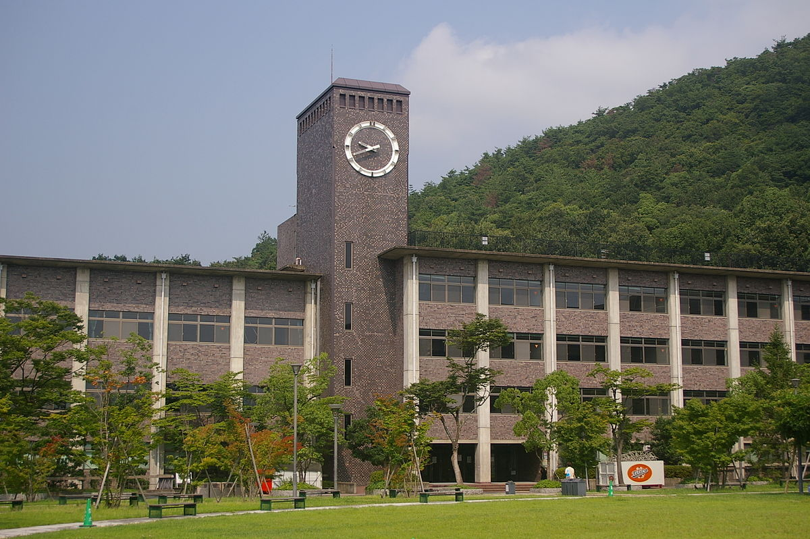

Formação anterior
Antes de entrar na FIAP, estudei Letras com habilitação em japonês na Universidade de São Paulo. Durante esta primeira graduação, realizei um ano de intercâmbio na Universidade Ritsumeikan, em Kyoto, no Japão, onde aprofundei meus conhecimentos sobre a língua japonesa.
Após concluir o bachalerado, trabalhei como tradutora de japonês e inglês para português na Crunchyroll, uma plataforma de streaming de animes, onde traduzi cerca de trinta séries.

Em 2017, conquistei uma bolsa de estudos para o mestrado em Tradução Literária da Universidade de Trinity, em Dublin, que finalizei em 2018. No entanto, vendo que a área de tecnologia oferecia oportunidades melhores, decidi migrar para ela no final do ano passado, motivo pelo qual ingressei na FIAP.
Minhas expectativas
Dentro deste curso, espero aprender o suficiente para ser uma desenvolvedora capaz de me inserir no mercado. Espero desenvolver projetos instigantes que me tornem capaz de criar soluções eficientes frente aos problemas propostos. Espero ter contato com profissionais e empresas que me ajudem a me colocar e a crescer na área.
São Paulo, 26 de fevereiro de 2020